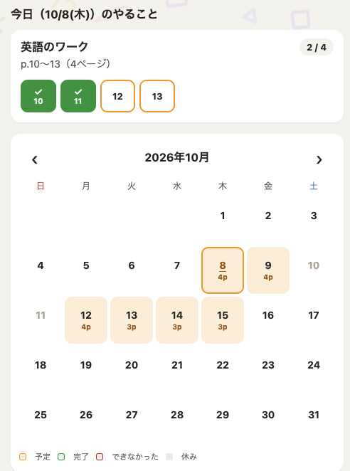
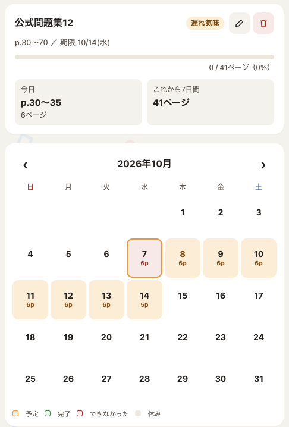
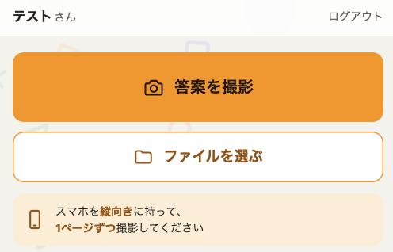

中学生のオンライン家庭教師
志望校も、苦手な教科も、
前の学年の抜けも。
1対1で、つまずいた所から。
- マンツーマン
- 全5科目に対応
- 自宅で受講・送迎なし
- 1回60分 2,000円〜
塾の現場で16年、中学生のお子様と、その保護者様と一緒に頑張ってきました。
オンラインで、お子様一人ひとりの理解と進み具合に合わせて教えます。
オンライン個別指導の、30分の無料相談です。現在の受付枠は10名です。
こんなことで悩んでいませんか
- 志望校まであと少し。でも、何をどう頑張ればいいか分からない
- 苦手な教科だけでも、なんとかしたい
- 前の学年の内容が抜けていて、基礎から教えてほしい
- 家で何をどう勉強すればいいのか、本人も分かっていない様子
- 帰宅すると、そのままスマホを見て寝てしまう
- 声をかけると喧嘩になるので、何も言えなくなってしまった
- 部活や仕事の都合で、塾の送り迎えが負担になっている
- 個別指導塾は月謝が高くて、続けにくい
どれも、塾の現場で何度も聞いてきたご相談です。
1対1だから、できること
集団の授業では、どうしても全員と同じペースで進みます。1対1なら、お子様の今の位置から始められます。
-
志望校まで、あと少し
今の位置を一緒に確かめて、何をいつやるかを1対1で決めます。
-
苦手な1教科だけ
全5科目に対応しています。1回ごとの料金なので、苦手な教科だけの受講もできます。
-
前の学年の抜け
中3でも、中1の内容から。学年に関係なく、つまずいた所まで戻って教えます。
-
塾の授業を消化しきれていない
通っている塾の教材をそのまま使って、分からなかった所を補います。
-
家での勉強の仕方が分からない
次の授業までの家での過ごし方も、一緒に決めます。1日にやるページは、アプリで自動で割り振ります。
ご自宅で受けられるので、送り迎えも移動の時間もいりません。
講師について
- 学習塾での指導歴（非常勤時代含む）16年
- これまで担当した中3生延べ800人以上
- 生徒アンケートでの授業評価（2021年度・在籍講師64名中）1位
- 京都教育大学卒／中学校教員免許（英語）取得
- 関西大手集団指導塾で、教室の文系責任者を10年務め、最難関コースを4年間担当
- 個別指導塾でリーダーとして4教室を統括
学校のテストで5科目合計100点に届かない生徒から、偏差値70超えの生徒まで、幅広く教えてきました。集団指導でも個別指導でも、成績を上げるうえで結局大事なのは「塾がない日の過ごし方」でした。
集団塾が合う子もいれば、1対1が合う子もいます。どちらが合うか分からないときは、1回60分の個別指導を一度試してみるのも一つの方法です。
オンライン個別指導の、30分の無料相談です。
料金
- 入会金0円
- 回数の縛りなし
- お支払い後払い
- 中1・中2 2,000円 1回60分・税込
- 中3 3,000円 1回60分・税込
全5科目に対応。授業の中身は、ご相談しながら決めていきます。
週1回（月4回前後）の場合の月額の目安
中1・中2：月8,000円前後中3：月12,000円前後
中学生の家庭教師の相場は、月1万〜4.5万円ほどです（コエテコ「オンライン家庭教師の料金相場」2026年8月更新より）。
月額制ではなく、授業1回ごとの料金です。例：中1・中2で月3回授業があった場合、その月の料金は6,000円です。
- 受講回数：月ごとに自由に決められます（最低回数の決まりはありません）。基本的には週1回のご受講をおすすめしています
- 教材費もいただきません（必要があればご提案いたします）
- お支払い：月末締め・翌月末払い。銀行振込 または PayPay
- 受講の終了：定期的な受講をやめる場合は、やめる月の15日までにご連絡ください（例：10月末でやめる場合、10月15日まで）
無料相談と体験授業までは費用がかかりません。料金が発生するのは、開始を決めていただいたあとからです。
オンライン個別指導の、30分の無料相談です。
指導方針
授業のない日の過ごし方まで、一緒に決める
分からない問題の解説はもちろん、次の授業までの家での過ごし方も一緒に決めます。毎週、授業の最後に次の1週間の予定を一緒に決め、次の授業でその結果を一緒に見ます。
毎日やるページは、アプリが自動で割り振ります
授業で決めた目標は、講師が用意したアプリ（Study Portal）に入れます。たとえば「1週間で問題集を40ページ」と決めると、1日に何ページやればいいかを自動で計算して、毎日の予定に割り振ります。できなかった分は、次の日以降の予定に自動で組み込み直すので、遅れても予定を一から立て直す必要はありません。
お子様のアプリには、その日にやるページが表示されます。終わったページをチェックしていくと、講師の画面にも進み具合が反映されるので、毎日の様子を講師も確認し、次の授業で一緒に見ます。
-

お子様のアプリ今日やるページが表示され、終わったページをチェックしていきます。 -

講師の管理画面目標と期限を入れると、1日にやるページがカレンダーに自動で入ります。
1回60分の授業の流れ
-
はじめに
先週の振り返り
決めた予定がどこまでできたかを、一緒に確かめます。
-
授業の中心
解説と演習
分からない所を写真で送ってもらい、画面に書き込みながら解説します。
-
最後に
次の1週間の予定
何をいつやるかをお子様と一緒に決めて、アプリに入れます。
講師と保護者の連携
成績や、机に向かうまでの時間を少しずつ変えていくには、講師と保護者様の連携が欠かせません。授業中には見せない本音を、ご家庭で話していることがあります。その様子を伺うこともあります。
塾との併用も可能
通っている塾の教材をそのまま使い、そこで消化しきれていない部分を補う形も取れます。どちらに軸足を置くかも含めて、ご家庭の状況に合わせてご相談ください。
始めるまでの流れ
-
お問い合わせ
フォームから送信してください。24時間以内に返信します。
-
無料相談（30分）
保護者の方おひとりでも構いません。現状を伺ったうえで、方針をご提案します。
-
体験授業
お子様と実際に1回、授業をします。保護者様も一緒に、授業の様子をご覧いただけます。相性を確かめていただくための時間です。
-
開始
曜日と時間を決めて始めます。受講の回数は、ご家庭の状況に合わせてご相談ください。
ご相談だけでも大丈夫です。ご納得いただいたうえで、ご検討ください。
授業のやり方
書画カメラなどの特別な機材は使いません。教科書やワークをまず自分で解いたり読んだりしてみて、分からない所があったら、スマホで写真を撮って送ってもらいます。写真はすぐに講師の iPad に届くので、Zoom で画面を共有し、その写真に書き込みながら説明します。お子様は、書き込みの入った画面をご自宅の画面で見ながら進めます。
- 分からない所を、スマホで撮って送ります（講師が用意したアプリ「Study Portal」を使います）
- 写真が講師の iPad に届き、講師が書き込みながら説明します
- 書き込みの入った画面を、Zoom の画面共有でご自宅の画面に映して見ます

必要な環境
Zoom をつなぐパソコンかタブレット、写真を撮って送るスマホ、インターネット接続があれば始められます。アプリの使い方や機材の準備は無料相談のときに一緒に確認しますので、ご不明な点があってもご安心ください。
よくある質問
どんな生徒に向いていますか
塾が続かなかったお子様、集団授業のペースが合わなかったお子様、人見知りで質問しにくいお子様、前の学年の基礎からつまずいているお子様などです。1対1なので、周りを気にせず質問でき、分からない所まで戻って進められます。合うかどうかは、体験授業で確かめてください。
オンラインでも集中できますか
分からない所は写真で送ってもらい、同じ画面を見ながら、書き込みを入れて説明します。会話をしながら進めるので、黙って時間が過ぎることはありません。それでも合う・合わないはありますので、体験授業で確かめてください。
親が同席したほうがいいですか
基本はお子様と一対一で進めます。授業の見学は、いつでもしていただけます。様子の共有が必要なときは、授業後に別でお伝えします。
塾に通いながらでも受けられますか
受けられます。塾の教材をそのまま使って、消化しきれていない部分を一緒に埋める形も取れます。
部活で時間が不規則ですが対応できますか
可能な範囲で調整します。曜日を固定したうえで、大会前などの事情があれば振替をご相談ください。空き枠の状況によってはご希望に添えないこともあります。
途中でやめることはできますか
できます。月ごとの最低受講回数もありません。ご連絡の時期は、料金の欄をご覧ください。ご家庭の状況が変わったときは、いつでもご相談ください。
どんな教材を使いますか
学校のワークや塾の教材など、すでにお持ちのものを優先して使います。足りない部分がある場合のみ、市販教材をご提案します（購入は任意です）。
成績はどのくらいで上がりますか
個人差があり、3か月ほどで変化が出る子もいれば、半年かかる子もいます。いつまでにどうなる、とお約束することはできません。ただ、勉強に手をつけるまでの時間が短くなる、という変化は比較的早く出ることが多いです。
無料相談のお申し込み
オンライン個別指導の、30分の無料相談です。フォームからお送りください。24時間以内に返信します。現在の受付枠は10名です。
フォームは別タブで開きます。保護者氏名・メールアドレス・お子様の学年・現在の学習状況の4項目を入力して送信できます。